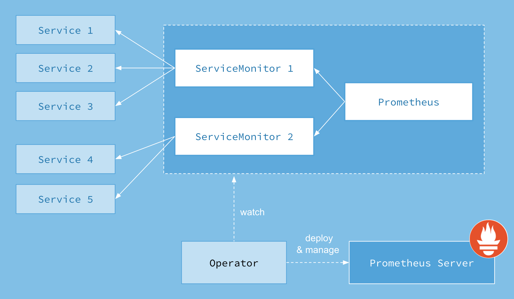

什么是Prometheus Operator
在第8章章中，为了在Kubernetes能够方便的管理和部署Prometheus，我们使用ConfigMap了管理Prometheus配置文件。每次对Prometheus配置文件进行升级时，，我们需要手动移除已经运行的Pod实例，从而让Kubernetes可以使用最新的配置文件创建Prometheus。 而如果当应用实例的数量更多时，通过手动的方式部署和升级Prometheus过程繁琐并且效率低下。
从本质上来讲Prometheus属于是典型的有状态应用，而其有包含了一些自身特有的运维管理和配置管理方式。而这些都无法通过Kubernetes原生提供的应用管理概念实现自动化。为了简化这类应用程序的管理复杂度，CoreOS率先引入了Operator的概念，并且首先推出了针对在Kubernetes下运行和管理Etcd的Etcd Operator。并随后推出了Prometheus Operator。
Prometheus Operator的工作原理
从概念上来讲Operator就是针对管理特定应用程序的，在Kubernetes基本的Resource和Controller的概念上，以扩展Kubernetes api的形式。帮助用户创建，配置和管理复杂的有状态应用程序。从而实现特定应用程序的常见操作以及运维自动化。
在Kubernetes中我们使用Deployment、DamenSet，StatefulSet来管理应用Workload，使用Service，Ingress来管理应用的访问方式，使用ConfigMap和Secret来管理应用配置。我们在集群中对这些资源的创建，更新，删除的动作都会被转换为事件(Event)，Kubernetes的Controller Manager负责监听这些事件并触发相应的任务来满足用户的期望。这种方式我们成为声明式，用户只需要关心应用程序的最终状态，其它的都通过Kubernetes来帮助我们完成，通过这种方式可以大大简化应用的配置管理复杂度。
而除了这些原生的Resource资源以外，Kubernetes还允许用户添加自己的自定义资源(Custom Resource)。并且通过实现自定义Controller来实现对Kubernetes的扩展。
如下所示，是Prometheus Operator的架构示意图：

Prometheus的本职就是一组用户自定义的CRD资源以及Controller的实现，Prometheus Operator负责监听这些自定义资源的变化，并且根据这些资源的定义自动化的完成如Prometheus Server自身以及配置的自动化管理工作。
Prometheus Operator能做什么
要了解Prometheus Operator能做什么，其实就是要了解Prometheus Operator为我们提供了哪些自定义的Kubernetes资源，列出了Prometheus Operator目前提供的️4类资源：
- Prometheus：声明式创建和管理Prometheus Server实例；
- ServiceMonitor：负责声明式的管理监控配置；
- PrometheusRule：负责声明式的管理告警配置；
- Alertmanager：声明式的创建和管理Alertmanager实例。
简言之，Prometheus Operator能够帮助用户自动化的创建以及管理Prometheus Server以及其相应的配置。
在Kubernetes集群中部署Prometheus Operator
在Kubernetes中安装Prometheus Operator非常简单，用户可以从以下地址中过去Prometheus Operator的源码：
git clone https://github.com/coreos/prometheus-operator.git
这里，我们为Promethues Operator创建一个单独的命名空间monitoring：
kubectl create namespace monitoring
由于需要对Prometheus Operator进行RBAC授权，而默认的bundle.yaml中使用了default命名空间，因此，在安装Prometheus Operator之前需要先替换一下bundle.yaml文件中ClusterRoleBinding以及ServiceAccount的namespace定义。 通过运行一下命令安装Prometheus Operator的Deployment实例：
$ kubectl -n monitoring apply -f bundle.yaml
clusterrolebinding.rbac.authorization.k8s.io/prometheus-operator created
clusterrole.rbac.authorization.k8s.io/prometheus-operator created
deployment.apps/prometheus-operator created
serviceaccount/prometheus-operator created
Prometheus Operator通过Deployment的形式进行部署，为了能够让Prometheus Operator能够监听和管理Kubernetes资源同时也创建了单独的ServiceAccount以及相关的授权动作。
查看Prometheus Operator部署状态，以确保已正常运行：
$ kubectl -n monitoring get pods
NAME READY STATUS RESTARTS AGE
prometheus-operator-6db8dbb7dd-2hz55 1/1 Running 0 19s